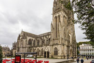
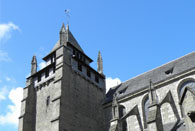
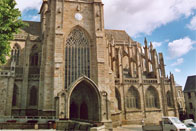

Western Culture Development
France has been a centre of Western cultural development for centuries. Many French artists have been among the most renowned of their time, and France is still recognised in the world for its rich cultural tradition.

The French Ministry of Culture
The French government also succeeded in maintaining a cultural exception to defend audiovisual products made in the country.
The Monuments and Museums of France

1,200 museums welcoming more than 50 million people annually. Centre des monuments nationaux, is responsible for approximately 85 national historical monuments.
The Religious Buildings of France

The 43,180 buildings protected as historical monuments include mainly residences (many castles) and religious buildings (cathedrals, basilicas, churches), but also statues, memorials and gardens.

Quimper Cathedral - Quimper, Finistère

Saint-Brieuc Cathedral - Saint-Brieuc, Côtes-d'Armor

Vannes Cathedral - Vannes, Morbihan
Saint-Pol-de-Léon Cathedral - Saint-Pol-de-Léon, Finistère

Tréguier Cathedral- Tréguier, Côtes-d'Armor